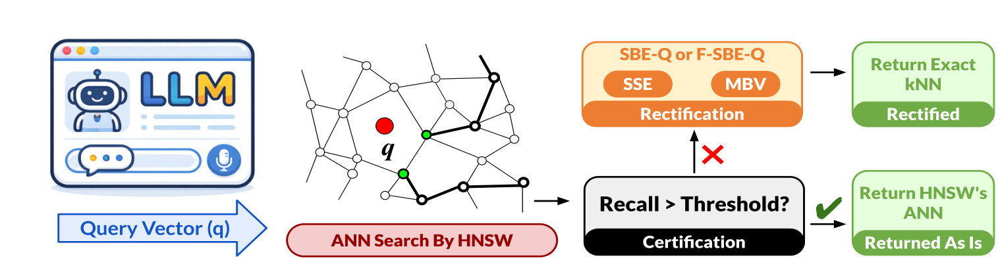
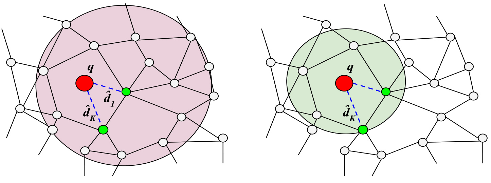
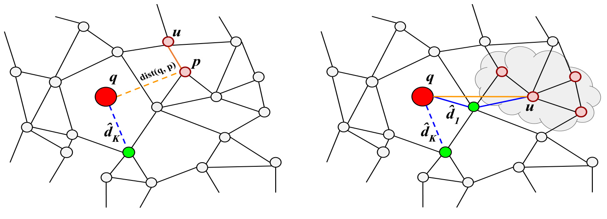
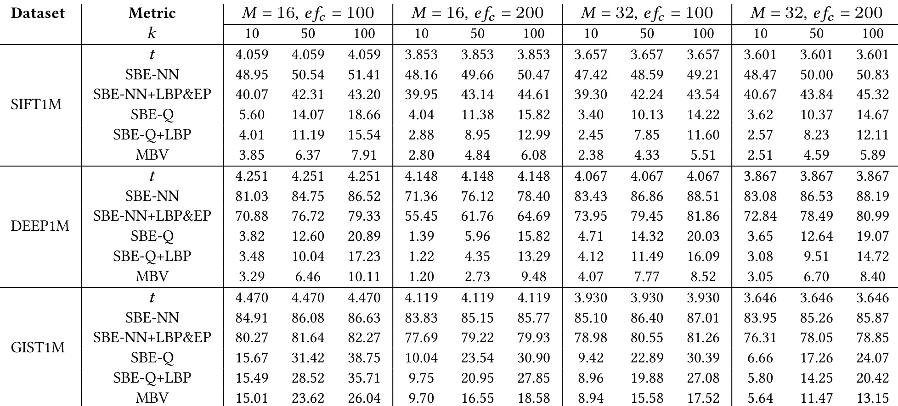
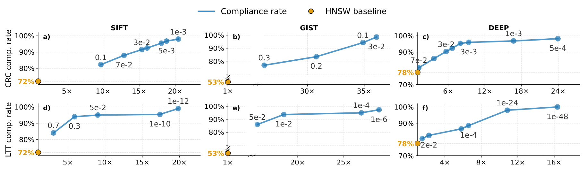
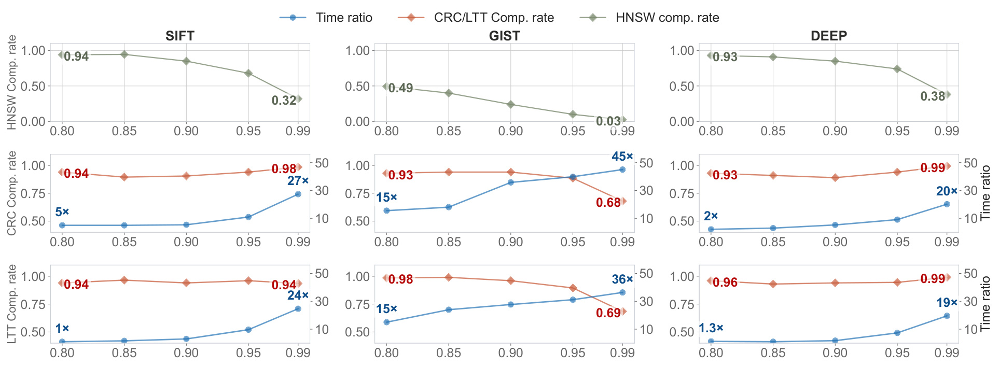
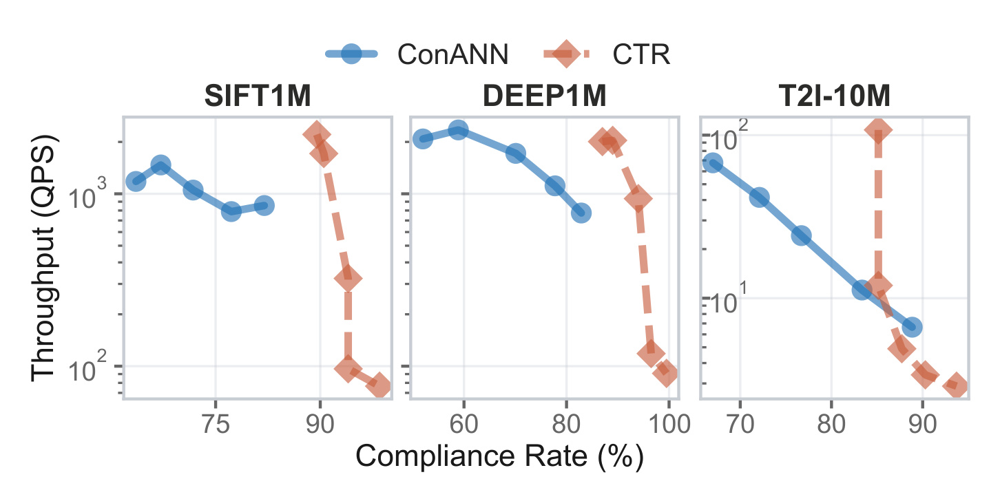
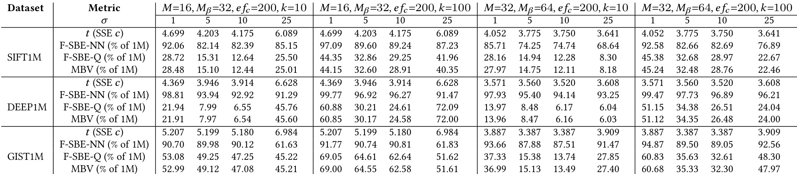
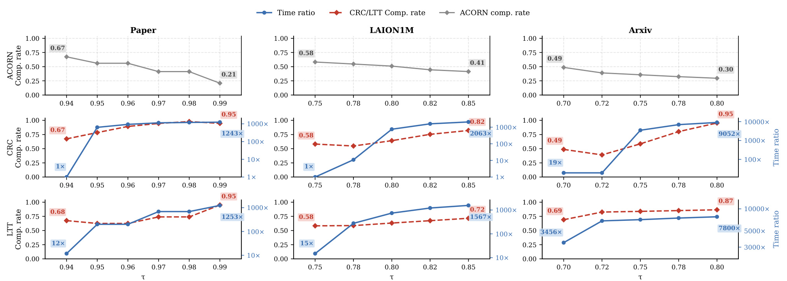

HNSW with Accuracy Guarantees Using Graph Spanners 精读笔记
论文入口：arXiv:2607.02338
中文标题：用图 spanner 给 HNSW 检索补准确性保证
作者与机构：Minghao Li、Raghav Mittal、Sanjivni Rana、Suraj Shetiya、Gautam Das、Nick Koudas；一作主机构为 University of Toronto，合作机构包括 University of Texas at Arlington 与 IIT Bombay。
代码/项目页核验状态：PDF 首页给出作者仓库 https://github.com/ming-afk/recall_certify_hnsw 。
[toc]
这篇技术报告讨论的不是另一个更快的向量索引，而是怎样给已经广泛使用的 HNSW 增加可解释的召回质量保证。它把 HNSW 的底层图看成一个经验几何 spanner，用随机极值估计给 exact recovery 半径上界，再用统计认证器判断普通 HNSW 结果是否已经足够可信；只有认证失败时才进入更重的精确恢复分支。
HNSW 已经是工业向量检索的常用近似近邻图索引，但它依赖贪心图遍历，返回结果的正确性没有理论保证；一旦把它放进召回、RAG 或过滤搜索链路，系统只能在速度和可证明召回之间二选一。
1. 背景和问题
HNSW 在推荐召回、广告候选生成、语义搜索和 RAG 检索里常被当成默认近似近邻索引，因为它的多层小世界图能在很少的距离计算下找到高质量候选。工程上常见做法是调大构图参数 M、调大查询 beam 宽度 ef，或者在离线评估里挑一个看起来召回足够高的运行点。问题在于，这些参数只改善平均表现，并不改变贪心搜索的性质：搜索过程可能停在局部结构上，返回集合与真实 top-k 的交集没有硬保证。对普通推荐召回来说，少量漏召也许只体现为离线 recall 下降；对带过滤条件的搜索、长尾内容召回、金融或医疗类 RAG，则可能变成不可解释的关键证据缺失。
论文的切入点很务实：不要求替换 HNSW，也不把 exact kNN 作为默认在线路径。作者承认完全精确恢复会更慢，因此提出 Certify-then-Rectify。先运行标准 HNSW，拿到近似 top-k 和搜索 trace；再用一个分布无关的统计 certifier 判断当前结果是否达到目标召回阈值 τ。如果 certifier 接受，就直接返回 HNSW 结果；如果 certifier 拒绝，系统才进入基于图 spanner 的恢复算法 SBE-Q 或 F-SBE-Q，并用 MBV 剪枝减少距离计算。这样做的核心不是让所有查询都走最严路径，而是把“哪些查询可以相信 HNSW、哪些必须补救”变成一个受控决策。
这类问题对推荐系统特别有现实意义。大规模召回层通常容忍近似，但下游排序、重排、生成式解释或多阶段过滤会放大召回缺口。例如过滤搜索中，用户要求满足某个 predicate 的最近邻，普通 HNSW/ACORN 可能因为过滤把局部小世界结构打碎而遗漏候选；RAG 中，ANN 检索漏掉关键文档会让 LLM 在后续生成阶段再也无从恢复。论文提供的视角是：在不改动 HNSW 主体的前提下，把它外面包一层可认证机制，给系统一个“快速接受”和“可证明补救”的分叉。
该报告的贡献可以拆成三层。第一层是几何层，把一个已经构好的 HNSW 底层图看成有限点集上的经验 spanner，估计最大 stretch，从而把 metric space 中的真实近邻包含到某个图距离球内。第二层是算法层，设计 SBE-Q 和 MBV，在图距离球内做 exact recovery，同时用三角不等式降低距离计算量。第三层是统计层，用 CRC 和 LTT 校准 HNSW trace 质量分数，使系统能在有限样本意义上控制 accepted 分支的召回短缺或条件合规率。三层叠起来，才形成“平均情况下像 HNSW 一样快，困难查询上有 rectification 兜底”的运行逻辑。
需要提前说明的是，这篇报告仍然有技术报告色彩，理论保证依赖 reachability、calibration oracle 和 EVT stretch 估计等假设；实验也显示 filtered search 下严格目标可能带来非常高的 runtime ratio。因此它更像一套给现有 HNSW 服务补质量保险的框架，而不是无成本的 HNSW 替代品。真正值得读的地方，是它把传统 ANN 图索引、spanner 理论、极值估计和 conformal 风控拼在一起，提供了一条能被工程系统渐进接入的保证化路线。
从读者角度看，这篇报告也把“召回质量”从离线平均指标推进到查询级风险控制。它关心的不是某个测试集上 recall@k 的均值，而是一次具体查询返回后，系统是否有理由相信这批候选已经达到目标阈值；如果没有，是否存在一个可以解释、可以停止、可以调参的恢复过程。这个问题在多阶段推荐里常被下游模型掩盖，但在需要可追溯证据的检索系统里会直接影响最终答案。
2. 方法
2.1 把 HNSW 当作经验 spanner 并估计 stretch
论文首先把 HNSW 的底层图抽象成一个带权图。核心机制是把经验图距离转成可认证搜索半径，再只把认证失败的查询送入恢复分支。 每条边的权重来自原始 metric distance，图上最短路距离记为 d_G。若一个图是 t-spanner，则任意两点的图距离不会比真实 metric distance 大超过 t 倍：
符号解释：u 和 v 是向量集合中的两个点，operatorname{dist} 是原始向量空间距离，d_G 是沿图边走出的最短路径距离，t 是 stretch factor。这个不等式的作用是把“真实空间里离查询很近”转换成“图上一定落在某个半径内”。HNSW 构图并不天然保证一个漂亮的全局 t，但任意有限的已构图实例都有一个经验最大 stretch：
符号解释：G_0 是 HNSW 的底层图，X 是数据点集合，t_emp 是所有点对图距离与真实距离比值的最大值。直接计算它需要近似二次复杂度，因此论文用 stochastic stretch estimation。做法是抽样大量点对，计算每个点对的 stretch，把样本分成多个 block，只保留 block maximum，再用极值理论拟合右尾。
GEV 分布被用来刻画 block maxima 的极端右尾；这里关注的是少数最坏 stretch 样本会把恢复半径推到哪里，而不是平均点对距离会怎样变化，因此它直接服务于后续的保守半径选择，并决定系统在高置信设置下愿意为 exact recovery 付出多大的图扩张成本：
符号解释：s 是 block maximum 的 stretch 值，μ、σ、ξ 分别是位置、尺度和形状参数。作者不是估计平均 stretch，而是估计一个高置信的 return level：
符号解释：β 是希望覆盖最大 stretch 的置信水平，t^* 是拟合出来的高分位回报水平。β 越接近 1，估计越保守，后续恢复半径越大，保证越稳但计算越重。查询 q 被临时插入图后，图结构变成 G'，作者用 reservoir tail patching 更新涉及 q 的极端 stretch 样本，而不是为每个查询从头估计整张图。

Figure 1 展示了整套方法的在线分支。左侧仍然是常规查询向量进入 HNSW 图检索，系统先拿到 ANN 候选和搜索 trace；中间的 certification 方框判断 recall 是否超过阈值，右下分支在通过认证时原样返回 HNSW 的 ANN 结果，右上分支在不通过时进入 SBE-Q 或 F-SBE-Q 加 MBV 的 rectification，最后返回 exact kNN。这个流程图的重点是“包裹”而非“替换”：HNSW 仍然负责快路径，SSE 和 MBV 只在需要时提供恢复能力。对工程实现来说，这意味着可以先把 certifier 和 rectifier 当作质量保险接入现有索引，而不是重写所有召回服务。
更细地看，该图把离线准备和在线决策压缩在同一个框架里：SSE 负责给图结构准备 stretch 上界，MBV 负责在失败分支里把 exact recovery 的距离计算降下来，certification 则只读取 HNSW trace 和校准阈值。这样，系统可把大多数容易查询留在低延迟路径，把难查询、过滤查询或高价值查询送去补救。若用于推荐召回，可以把认证失败率当作服务健康指标；若失败率突然上升，说明数据分布、过滤条件或索引参数已让普通 HNSW 快路径变得不可靠。
2.2 SBE-Q：从查询点收缩 exact recovery 半径
有了 stretch 估计后，论文要回答的是：真实 top-k 一定在哪里？设普通 HNSW 返回的第 k 个候选距离为 \hat d_k，真实第 k 近邻距离为 d_k^*。因为 HNSW 返回的是一个大小为 k 的合法候选集合，真实 top-k 的第 k 距离不会更远：
符号解释：d_k^* 是真实 top-k 中最远那个点到 q 的距离，\hat d_k 是 HNSW 返回候选中第 k 个距离。这个上界很朴素，但它是后续 radius bound 的入口。SBE-NN 从 HNSW 返回的最近候选 x^{(1)} 出发展开图搜索，需要用三角不等式补上 q 到 x^{(1)} 的距离：
符号解释：x^* 是任意真实 top-k 点，\hat d_1 是 HNSW 返回最近候选到 q 的距离，t 是底层图 stretch。该式保证从 x^{(1)} 出发、半径为 t(\hat d_1+\hat d_k) 的图球包含真实答案，但 \hat d_1 是额外 slack，在高维空间里可能显著扩大搜索区域。
SBE-Q 的改进是把 q 虚拟插入图，直接从 q 出发。若增广图 G' 是 t' -spanner，则真实 top-k 落在更小的图球内：
符号解释：G' 是加入查询节点后的临时图，t' 是增广图 stretch，x^* 是真实 top-k 中任一点。与 SBE-NN 相比，SBE-Q 去掉了 \hat d_1，所以半径只跟当前第 k 候选距离有关。当搜索过程中发现更近候选时，\hat d_k 会下降，半径也随之收紧；这让 exact recovery 不是固定扩大一圈，而是随着更好的候选不断减少探索。

Figure 2 是这条几何论证的直观版本。左图从 HNSW 返回的最近候选出发，粉色区域必须覆盖从 x^{(1)} 到 q 再到真实近邻的三角路径，因此半径里有 \hat d_1+\hat d_k；右图把 q 当成临时节点，绿色区域直接围绕 q，只需要 \hat d_k。论文后续实验中 SBE-Q 的 NDC 明显小于 SBE-NN，本质上就是图里粉色球和绿色球体积差异的量化结果。对召回系统来说，这一步把“为了保证而全量扫描”的风险压低为“在一张图距离球里有界扩张”。
这个差异还解释了为什么作者特别强调 query insertion。若仍从返回的最近候选出发，HNSW 已经犯错时最近候选未必真的接近 q，额外的 \hat d_1 会把搜索半径放大到许多无关节点。SBE-Q 把 q 放到图中，等于承认查询本身才是几何中心，再用 HNSW 第 k 候选距离作为保守外界。这个设计没有要求 HNSW 初始结果完全正确，只要求它给出一个可用的距离上界；因此它适合做失败补救，而不只是给高质量 HNSW 结果做形式化证明。
2.3 MBV：用三角不等式省掉无效距离计算
仅靠 SBE-Q 仍然可能访问很多节点，因此作者进一步提出 Metric Bound Verification。MBV 不改变 exact recovery 的包含性，而是在扩张过程中尽量少算 dist(q,u)。对于一个由父节点 p 扩展来的节点 u，三角不等式给出下界：
符号解释：p 是搜索树中的父节点，u 是候选节点，dist(p,u) 是图边对应的真实 metric 距离。若父节点已经被真实计算，就用 dist(q,p) 传播下界；若父节点本身是被下界剪掉的，就传播 LB(p)。当 LB(u)>\hat d_k 时，u 不可能进入当前 top-k，可以跳过昂贵的 query-to-node 距离计算。
MBV 的第二个剪枝是 elliptical search space pruning。设当前图距离为 d_{G'}(q,u)，剩余允许半径来自 t'\hat d_k。若节点 u 已经离 q 太远，即使从 u 再往后走也无法抵达更优候选，则整个分支可以停止：
符号解释：左边是已经走到 u 的图路径距离加上 u 到 q 的真实距离；右边是 stretch-bounded 搜索半径与当前第 k 候选距离。该条件成立时，经过 u 的后代节点无法在 metric 空间里进入当前 top-k，系统不仅可以不把 u 当候选，还可以不展开 u 的邻居。lower-bound pruning 省单个距离计算，elliptical pruning 省整段搜索空间。

Figure 3 左侧对应 recursive lower bound：父节点 p 与子节点 u 的边长让系统能推断 u 到 q 至少有多远；如果这个下界已经超过当前 \hat d_k，就没有必要计算 u 的真实距离。右侧对应 elliptical pruning：u 及其后代位于图路径和 metric 距离共同约束之外，蓝色路径和橙色距离线说明它们即使继续扩展也不能改善 top-k。该图也说明 MBV 为什么不依赖具体 HNSW 实现细节；它利用的是 metric space 的三角不等式，因此可以迁移到 filtered SBE-Q 和 DiskANN/Vamana 这类图检索结构。
从服务视角看，MBV 的收益来自两个粒度。下界剪枝像是候选级别的 lazy evaluation，尽量复用父节点距离和已有边权；椭圆剪枝像是子树级别的 early stop，避免把已经没有希望的分支继续推进优先队列。二者都不牺牲 exact recovery 目标，因为被剪掉的对象已经被不等式证明不可能改善当前 top-k。与简单增大 ef 不同，MBV 的额外工作有明确停止条件，并会随着 \hat d_k 变小自动收缩。
2.4 CRC/LTT certifier：只在不可信时触发 rectification
最后一层是 certifier。论文没有让每个查询都进入 MBV，而是从 HNSW 的 search trace 提取质量分数 s(q)。特征包括返回候选距离、候选 frontier 距离、搜索 trace 大小，以及底层队列弹出距离的 reversal 统计。目标 recall 定义为：
符号解释：N_k(q) 是 HNSW 返回的近似集合，N_k^*(q) 是 exact oracle 给出的真实集合，k 是返回规模。给定目标阈值 τ，若 Recall(q)≥τ，就称该查询 compliant。CRC 路线把 recall shortfall 定义为 l(q)=max(0,τ-Recall(q))，然后在校准集上为分数阈值 θ 估计风险：
符号解释：s_i 是第 i 个校准查询的质量分数，l_i 是该查询的 recall shortfall，indicator 表示只统计被阈值接受的查询。CRC 选择能让经验风险低于 α(1-τ) 修正项的阈值，给 accepted 分支一个有限样本的期望短缺控制。LTT 路线更像假设检验：在候选阈值集合上测试 accepted 查询失败率是否超过 ε，并用 Bonferroni 修正选择阈值。
端到端保证把两条分支合起来。若 ρ 是 certifier 接受 HNSW 结果的概率，β 是 rectification 分支的 stretch 事件置信度，则 LTT 路线给出：
符号解释：Q 是新查询，ρ(1-ε) 来自被 certifier 接受的快路径，(1-ρ)β 来自触发 MBV 的恢复路径。这个式子很清楚地揭示了 CTR 的调参含义：certifier 越宽松，ρ 越高，系统越快但更依赖 accepted 分支质量；certifier 越保守，更多查询进入 rectification，速度下降但保证更强。论文的实验部分正是在测这条曲线是否能在真实数据上取得可用折中。
3. 实验结果
论文实验分成几个问题：stretch 估计是否稳定，SBE-Q/MBV 相比朴素扩张能省多少距离计算，CRC/LTT 的合规率和运行时间如何随 α、τ 改变，CTR 与 ConANN 等已有系统相比处在什么位置，以及 filtered search 下是否仍然可用。数据集覆盖 SIFT1M、GIST1M、DEEP1M，以及 Text-to-Image 10M/100M；过滤实验又接入 ACORN 和真实谓词数据 PAPER、LAION1M、arXiv。实现上作者扩展 nmslib/hnswlib，用单线程 Ice Lake CPU 做内存驻留测试，这意味着结果更偏向算法原型验证，不应直接等同于生产集群吞吐。

Table 2 是最关键的低层结果。NDC 按 1M base nodes 的百分比报告，数值越低表示 exact recovery 为了保证正确性需要计算的距离越少。SBE-NN 在 SIFT1M 上常在 48% 到 51% 左右，DEEP1M 和 GIST1M 甚至更高；SBE-Q 去掉 \hat d_1 slack 后，很多配置直接降到个位数或十几个百分点。MBV 在 SBE-Q 基础上继续下降，例如 SIFT1M、M=32、efc=200、k=100 时，SBE-Q 是 14.67，MBV 是 5.89；DEEP1M 同配置从 19.07 降到 8.40。GIST1M 因维度和几何结构更难，MBV 仍有 13.15 或更高，但相对 SBE-NN 依然显著压缩。这个表说明 exact recovery 的成本不是不可控全扫，而是能被半径收缩和 metric bound 剪枝实质性降低。
表中还体现出两个调参信号。第一，M 和 efc 变大通常会改善 HNSW 图连通性，使 stretch 和初始候选质量更好，但这会带来构图和内存成本。第二，k 从 10 到 100 时，\hat d_k 变大，恢复半径随之扩大，所以 NDC 上升是自然结果。换句话说，CTR 的成本不仅由 certifier 决定，也由业务要求的召回规模 k、索引构图参数和数据集几何共同决定。若生产链路只需要小 k 的高置信 fallback，它会比大 k 全量 exact recovery 更可控。
alpha sweep 关注 certifier 的保守程度。α 越小，统计认证越严格，被接受的 HNSW 查询越少，rectification 触发越多；α 越大，系统更愿意相信普通 HNSW。论文同时给 CRC 和 LTT 两套曲线，关注的是 compliance rate 与 HNSW runtime multiple 的关系，而不是单纯平均 recall。

Figure 6 显示，在 SIFT 和 DEEP 上，随着 α 取值变得更严格，合规率可以接近或达到 100%，但需要多个到几十个 HNSW runtime 的开销。GIST 的基线合规率更低，特别是 HNSW baseline 只有 53% 左右，因此达到高 compliance 需要更高倍数的时间。CRC 与 LTT 的差别也体现在可用 α 范围上：LTT 的显著性检验会把有用区间推向非常小的 α，例如 1e-10 或 1e-48，这不是模型任性，而是二项检验在低失败计数下的尾概率特征。对工程调参来说，该图给出的不是一个固定最优点，而是告诉你要把目标 recall、失败容忍度和延迟预算一起选。
这组曲线还提示 certifier 不是越强越好。若 α 过于保守，系统会把大量其实已经合格的 HNSW 查询送去 rectification，平均延迟会迅速上升；若 α 过于宽松，accepted 分支会留下更多低召回结果。最实际的做法是按查询重要性或业务场景使用多套阈值：普通推荐召回可以接受较宽松认证，关键证据检索或安全查询则使用更严格认证。论文的贡献在于把这种策略从经验阈值调整变成有统计语义的校准问题。
τ sweep 则把目标 recall 阈值当成横轴。τ 越高，普通 HNSW 越难合规；如果系统坚持高 τ，CTR 必须把更多查询送入 MBV，所以延迟上升是必然结果。

Figure 7 的上排显示 HNSW baseline 在 τ 从 0.80 提到 0.99 时快速下降，GIST 从 0.49 掉到 0.03，说明难数据集上“只调 HNSW”无法稳定满足严格目标。中下排显示 CRC/LTT 通过 rectification 能把合规率维持在更高位置，但时间倍数随 τ 增大而上升：SIFT 上 CRC 从约 5× 到 27×，LTT 从约 1× 到 24×；DEEP 上也从低倍数升到接近 20×。这正好符合 CTR 的设计意图：它不是免费保证，而是把保证成本显式暴露为一条可调曲线。若推荐召回只要求较宽松 τ，certifier 可以保留快路径；若问答证据召回要求接近 1 的召回，就要为 rectification 预留预算。
该图尤其适合用来解释线上 SLA 设计。τ 不是纯算法参数，而是业务把“漏掉真实近邻”看得多严重的表达。τ=0.80 时，HNSW 自身可能已能覆盖多数普通查询；τ=0.99 时，几乎所有困难查询都会暴露出来，CTR 的成本也随之显性化。相比只看平均 recall，合规率曲线能看出尾部查询是否被救回。若一个服务只有少量高风险请求，可以只在这些请求上使用高 τ；若全流量要求高 τ，就必须接受更高的资源成本。
外部比较方面，论文选 ConANN 作为代表系统。ConANN 基于 IVF 并校准 conformal early termination，也试图控制 approximation error，但它不能恢复已经漏掉的邻居，只能在探查和截断策略内调整。CTR 的差异在于被判定为低质量的查询会进入 exact recovery。

Figure 12 以 compliance rate 和吞吐 QPS 同时展示两者位置。SIFT1M 和 DEEP1M 上，CTR 在较高 compliance 区域形成更靠右的一簇点，说明 rectification 能把结果推到更高召回；ConANN 在一些低目标场景保持更高吞吐，但 compliance plateau 明显。T2I-10M 上，CTR 在高合规率处吞吐下降很快，显示精确恢复在多模态大规模索引上仍有成本。该图最值得注意的不是“谁全面赢”，而是两类方法的能力边界不同：ConANN 更像快路径停止规则，CTR 则拥有补救低质量查询的后备路径，因此在严格召回目标下更有上界优势。
如果要把它迁移到推荐系统，可把 ConANN 类方法理解为“更聪明地决定何时停”，把 CTR 理解为“停错时还能找回来”。前者适合吞吐压力极高、错误可由下游排序稀释的候选生成；后者适合对召回缺失敏感的检索链路。Figure 12 中 CTR 的竖向下落也提醒我们，rectification 的吞吐损失可能很集中，所以不能只看平均 QPS，还要看被拒绝查询的占比和单次恢复成本。
filtered search 是论文与推荐/搜索系统更贴近的一部分。谓词过滤会让图上的可达路径与候选资格分离：中间节点可能不满足 predicate，却仍然是通向合格近邻的必要桥。作者把 SBE-Q 扩展成 F-SBE-Q，遍历时允许经过不满足 predicate 的节点，但只有满足 predicate 的节点才进入 top-k 候选；MBV 仍用 metric bound 剪枝。

Table 5 在 ACORN 上比较 F-SBE-NN、F-SBE-Q 与 MBV 的 expanded-node coverage。可以看到，F-SBE-Q 相比 F-SBE-NN 经常大幅降低探索比例，例如 SIFT1M 在 M=16、k=10、σ=10 时从 82.39 降到 12.64，MBV 进一步到 12.44；DEEP1M 同类配置从 92.92 降到 6.55，再到 6.54。GIST 仍更难，部分配置 F-SBE-Q 和 MBV 仍接近 50% 或更高，但相比 F-SBE-NN 的高覆盖率仍有下降。这个表说明 filtered search 的保证化并非只在理论上成立；即使 predicate 会改变候选集合，查询点扩张和 metric pruning 仍能减少相当多无效探索。
filtered search 的难点是路径节点和结果节点不是同一概念。一个不满足 predicate 的节点不能进入结果集，但它可能连接到满足条件的近邻；如果搜索只在满足 predicate 的子图里走，就可能把图切碎。F-SBE-Q 保留穿越全图的能力，只在更新 top-k 时检查 predicate，这使 spanner bound 仍能发挥作用。Table 5 的意义就在这里：它显示保证化恢复不必退化为在过滤子集上盲目扫描，而可以利用原图连通性和 metric 下界来控制 expanded nodes。
真实过滤数据的结论更复杂。PAPER、LAION1M 和 arXiv 的谓词分布不同，ACORN baseline 的 compliance 起点也不同。论文用 τ sweep 看系统在不同目标阈值下的变化。

Figure 22 暴露了 filtered search 的代价边界。PAPER 上，CRC 和 LTT 都能把 compliance 从 ACORN baseline 的低位推到 0.95 左右，但 runtime ratio 会升到千倍量级；LAION1M 也出现从数十倍到上千倍的范围；arXiv 数据更极端，时间轴达到数千到近万倍。这个结果不能被简单解读成 CTR 已经适合所有在线过滤场景。更合理的理解是：当 predicate 非常苛刻或 baseline 本身合规率低时，可证明恢复会非常昂贵；但在离线校验、关键查询 fallback、低频高价值请求或小流量安全模式中，它提供了一个可以调节的正确性上界。工程落地时应把 F-SBE-Q/MBV 当成选择性兜底，而不是默认替代 ACORN 的每次查询路径。
实验总体支持论文主张的三点。第一，SBE-Q 的半径收缩确实比 SBE-NN 更省，Table 2 和 Table 5 都说明去掉 \hat d_1 slack 是关键收益来源。第二，MBV 的 lower-bound 与 elliptical pruning 能继续降低距离计算，但收益受数据几何结构影响，GIST 一类高维描述子仍然较难。第三，CRC/LTT 能把 accepted HNSW 和 rectified recovery 混成一条可调曲线；目标越严格，成本越高，但系统终于能把“是否满足召回阈值”作为显式约束讨论，而不是只报告平均 recall。
4. 总结
这篇报告的价值在于把 HNSW 的经验强性能和 exact search 的可证明性接起来。它没有否认 HNSW 的启发式本质，而是把 HNSW 结果视为一个需要认证的候选；当认证失败时，再用 spanner stretch、SBE-Q 和 MBV 找回真实 top-k。对推荐召回和 RAG 检索来说，这种设计比“永远调大 ef”更清晰，因为它把质量风险分成 accepted 分支风险和 rectification 分支风险，并让 α、τ、β、ε 成为可解释的服务参数。
我认为它最适合三类场景。第一类是关键检索请求的 selective fallback，例如重要用户、低召回风险 query、合规或安全相关检索，只让少量查询进入 MBV。第二类是离线验证或灰度监控，用 CTR 估计普通 HNSW 在不同流量切片上的隐性漏召风险。第三类是带 predicate 的 filtered search 研究，因为它明确处理“中间节点不合格但图路径必须经过”的情况。若直接放到高 QPS 主召回链路，需要非常谨慎地控制 rectification 触发率。
局限也比较明确。其一，EVT stretch bound 依赖采样和 tail fitting，β 的语义不是无条件数学真理，极端图结构或分布漂移可能让估计偏乐观。其二，calibration labels 由 MBV oracle 产生，论文也承认 conformal guarantee 与 oracle exactness 存在耦合。其三，filtered search 实验显示严格目标下 runtime ratio 可能过高，线上只能做小比例兜底或异步修正。其四，报告是技术报告，部分实验参数、硬件和实现细节仍需要独立复现，尤其是 T2I、ACORN 和 DiskANN/Vamana 部分。
后续如果要跟进，我会优先看三个方向：一是仓库实现中 SSE 采样、GEV 拟合和 reservoir patching 的默认参数是否稳定；二是 certifier 的 score features 在真实推荐召回 trace 上是否仍能区分好坏查询；三是把 rectification 触发率限制在一个服务预算内时，实际能提升多少 tail recall。只有这三点跑通，CTR 才能从“理论上有保证的 HNSW wrapper”变成能放进真实召回链路的质量保险层。